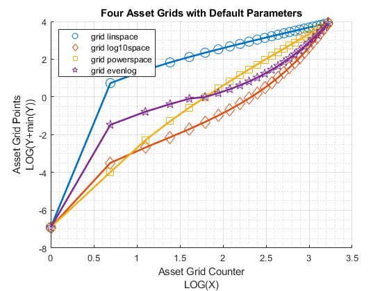
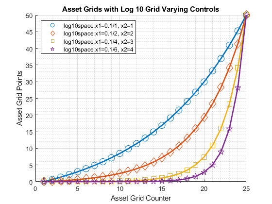
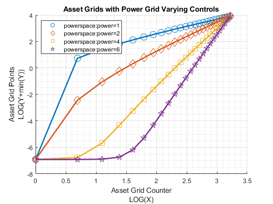

Chapter 7 Data Structures
7.1 FF_SAVEBORR_GRID Example for Generating Asset Grid
Go back to fan’s MEconTools Toolbox (bookdown), Matlab Code Examples Repository (bookdown), or Math for Econ with Matlab Repository (bookdown).
This is the example vignette for function: ff_saveborr_grid from the MEconTools Package. This function generates variously spaced savings/borrowing states/choices grid.
7.1.1 Test FF_SAVEBORR_GRID Defaults
Call the function with defaults.
ff_saveborr_grid();
----------------------------------------
xxxxxxxxxxxxxxxxxxxxxxxxxxxxxxxxxxxxxxxx
CONTAINER NAME: mp_container_map ND Array (Matrix etc)
xxxxxxxxxxxxxxxxxxxxxxxxxxxxxxxxxxxxxxxx
i idx ndim numel rowN colN sum mean std coefvari min max
_ ___ ____ _____ ____ ____ _____ _____ ______ ________ ___ ___
ar_fl_saveborr 1 1 2 25 25 1 216.7 8.668 13.363 1.5417 0 50
xxx TABLE:ar_fl_saveborr xxxxxxxxxxxxxxxxxx
c1
________
r1 0
r2 0.029558
r3 0.067855
r4 0.11748
r5 0.18177
r6 0.26507
r7 0.37301
r8 0.51286
r9 0.69407
r10 0.92885
r11 1.2331
r12 1.6272
r13 2.1379
r14 2.7996
r15 3.657
r16 4.7679
r17 6.2072
r18 8.0722
r19 10.489
r20 13.62
r21 17.676
r22 22.932
r23 29.743
r24 38.567
r25 50
----------------------------------------
xxxxxxxxxxxxxxxxxxxxxxxxxxxxxxxxxxxxxxxx
CONTAINER NAME: mp_container_map Scalars
xxxxxxxxxxxxxxxxxxxxxxxxxxxxxxxxxxxxxxxx
i idx value
_ ___ _____
grid_evenlog_threshold 1 2 1
grid_log10space_x1 2 3 0.3
grid_log10space_x2 3 4 3
grid_powerspace_power 4 5 3 7.1.2 Test FF_SAVEBORR_GRID Default Linear Grid, Log Grid, Power Grid, Threshold Grid
Call the function with defaults.
% Same min and max and grid points
[fl_a_min, fl_a_max, it_a_points] = deal(0,50,25);
% Four types of grid points
st_grid_type = 'grid_linspace';
[ar_fl_saveborr_linspace] = ff_saveborr_grid(fl_a_min, fl_a_max, it_a_points, st_grid_type);
st_grid_type = 'grid_log10space';
[ar_fl_saveborr_log10space] = ff_saveborr_grid(fl_a_min, fl_a_max, it_a_points, st_grid_type);
st_grid_type = 'grid_powerspace';
[ar_fl_saveborr_powerspace] = ff_saveborr_grid(fl_a_min, fl_a_max, it_a_points, st_grid_type);
st_grid_type = 'grid_evenlog';
[ar_fl_saveborr_evenlog] = ff_saveborr_grid(fl_a_min, fl_a_max, it_a_points, st_grid_type);
% draw four types of lines jointly
mt_value = [ar_fl_saveborr_linspace'; ar_fl_saveborr_log10space'; ...
ar_fl_saveborr_powerspace'; ar_fl_saveborr_evenlog'];
ar_row_grid = ["grid linspace", "grid log10space", "grid powerspace", "grid evenlog"];
ar_col_grid = 1:it_a_points;
mp_support_graph = containers.Map('KeyType', 'char', 'ValueType', 'any');
mp_support_graph('cl_st_graph_title') = {'Four Asset Grids with Default Parameters'};
mp_support_graph('cl_st_ytitle') = {'Asset Grid Points'};
mp_support_graph('cl_st_xtitle') = {'Asset Grid Counter'};
mp_support_graph('bl_graph_logy') = true; % do not log
ff_graph_grid(mt_value, ar_row_grid, ar_col_grid, mp_support_graph);
7.1.3 Test FF_SAVEBORR_GRID Log Grid Changing Parameters
Log grid, same min and max, change log X1 and X2 points
% Same min and max and grid points
[fl_a_min, fl_a_max, it_a_points] = deal(0,50,25);
st_grid_type = 'grid_log10space';
% Four types of grid points
mp_grid_control = containers.Map('KeyType','char', 'ValueType','any');
mp_grid_control('grid_log10space_x1') = 0.1;
mp_grid_control('grid_log10space_x2') = 1;
[ar_fl_log10space_a] = ff_saveborr_grid(fl_a_min, fl_a_max, it_a_points, st_grid_type, mp_grid_control);
mp_grid_control('grid_log10space_x1') = 0.1/2;
mp_grid_control('grid_log10space_x2') = 1*2;
[ar_fl_log10space_b] = ff_saveborr_grid(fl_a_min, fl_a_max, it_a_points, st_grid_type, mp_grid_control);
mp_grid_control('grid_log10space_x1') = 0.1/4;
mp_grid_control('grid_log10space_x2') = 1*4;
[ar_fl_log10space_c] = ff_saveborr_grid(fl_a_min, fl_a_max, it_a_points, st_grid_type, mp_grid_control);
mp_grid_control('grid_log10space_x1') = 0.1/6;
mp_grid_control('grid_log10space_x2') = 1*6;
[ar_fl_log10space_d] = ff_saveborr_grid(fl_a_min, fl_a_max, it_a_points, st_grid_type, mp_grid_control);
% draw four types of lines jointly
mt_value = [ar_fl_log10space_a'; ar_fl_log10space_b'; ...
ar_fl_log10space_c'; ar_fl_log10space_d'];
ar_row_grid = [...
"log10space:x1=0.1/1, x2=1", ...
"log10space:x1=0.1/2, x2=2", ...
"log10space:x1=0.1/4, x2=3", ...
"log10space:x1=0.1/6, x2=4"];
ar_col_grid = 1:it_a_points;
mp_support_graph = containers.Map('KeyType', 'char', 'ValueType', 'any');
mp_support_graph('cl_st_graph_title') = {'Asset Grids with Log 10 Grid Varying Controls'};
mp_support_graph('cl_st_ytitle') = {'Asset Grid Points'};
mp_support_graph('cl_st_xtitle') = {'Asset Grid Counter'};
mp_support_graph('bl_graph_logy') = true; % do not log
ff_graph_grid(mt_value, ar_row_grid, ar_col_grid, mp_support_graph);
7.1.4 Test FF_SAVEBORR_GRID Power Grid Changing Parameters
Log grid, same min and max, change log X1 and X2 points
% Same min and max and grid points
[fl_a_min, fl_a_max, it_a_points] = deal(0,50,25);
st_grid_type = 'grid_powerspace';
% Four types of grid points
mp_grid_control = containers.Map('KeyType','char', 'ValueType','any');
mp_grid_control('grid_powerspace_power') = 1;
[ar_fl_powerspace_a] = ff_saveborr_grid(fl_a_min, fl_a_max, it_a_points, st_grid_type, mp_grid_control);
mp_grid_control('grid_powerspace_power') = 2;
[ar_fl_powerspace_b] = ff_saveborr_grid(fl_a_min, fl_a_max, it_a_points, st_grid_type, mp_grid_control);
mp_grid_control('grid_powerspace_power') = 4;
[ar_fl_powerspace_c] = ff_saveborr_grid(fl_a_min, fl_a_max, it_a_points, st_grid_type, mp_grid_control);
mp_grid_control('grid_powerspace_power') = 6;
[ar_fl_powerspace_d] = ff_saveborr_grid(fl_a_min, fl_a_max, it_a_points, st_grid_type, mp_grid_control);
% draw four types of lines jointly
mt_value = [ar_fl_powerspace_a'; ar_fl_powerspace_b'; ...
ar_fl_powerspace_c'; ar_fl_powerspace_d'];
ar_row_grid = [...
"powerspace:power=1", ...
"powerspace:power=2", ...
"powerspace:power=4", ...
"powerspace:power=6"];
ar_col_grid = 1:it_a_points;
mp_support_graph = containers.Map('KeyType', 'char', 'ValueType', 'any');
mp_support_graph('cl_st_graph_title') = {'Asset Grids with Power Grid Varying Controls'};
mp_support_graph('cl_st_ytitle') = {'Asset Grid Points'};
mp_support_graph('cl_st_xtitle') = {'Asset Grid Counter'};
mp_support_graph('bl_graph_logy') = true; % do not log
ff_graph_grid(mt_value, ar_row_grid, ar_col_grid, mp_support_graph);
7.1.5 Test FF_SAVEBORR_GRID Threshold Grid Changing Parameters
Threshold Grid, Changing Threshold Levels. Initial segments below threshold are linspace, then logspace.
% Same min and max and grid points
[fl_a_min, fl_a_max, it_a_points] = deal(0,50,25);
st_grid_type = 'grid_evenlog';
% Four types of grid points
mp_grid_control = containers.Map('KeyType','char', 'ValueType','any');
mp_grid_control('grid_evenlog_threshold') = 0.50;
[ar_fl_evenlog_a] = ff_saveborr_grid(fl_a_min, fl_a_max, it_a_points, st_grid_type, mp_grid_control);
mp_grid_control('grid_evenlog_threshold') = 1.00;
[ar_fl_evenlog_b] = ff_saveborr_grid(fl_a_min, fl_a_max, it_a_points, st_grid_type, mp_grid_control);
mp_grid_control('grid_evenlog_threshold') = 2;
[ar_fl_evenlog_c] = ff_saveborr_grid(fl_a_min, fl_a_max, it_a_points, st_grid_type, mp_grid_control);
mp_grid_control('grid_evenlog_threshold') = 5;
[ar_fl_evenlog_d] = ff_saveborr_grid(fl_a_min, fl_a_max, it_a_points, st_grid_type, mp_grid_control);
% draw four types of lines jointly
mt_value = [ar_fl_evenlog_a'; ar_fl_evenlog_b'; ...
ar_fl_evenlog_c'; ar_fl_evenlog_d'];
ar_row_grid = [...
"evenlog:threshold=0.5", ...
"evenlog:threshold=1.0", ...
"evenlog:threshold=2.0", ...
"evenlog:threshold=5.0"];
ar_col_grid = 1:it_a_points;
mp_support_graph = containers.Map('KeyType', 'char', 'ValueType', 'any');
mp_support_graph('cl_st_graph_title') = {'Asset Grids with Threshold Grid Varying Controls'};
mp_support_graph('cl_st_ytitle') = {'Asset Grid Points'};
mp_support_graph('cl_st_xtitle') = {'Asset Grid Counter'};
mp_support_graph('bl_graph_logy') = true; % do not log
ff_graph_grid(mt_value, ar_row_grid, ar_col_grid, mp_support_graph);